真实地图地理北/东未独立标定；图中只有公开Polygon与概率质心，没有GT目标。所有图片为模型真实输出。
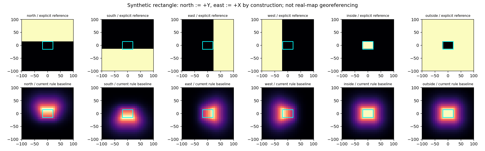
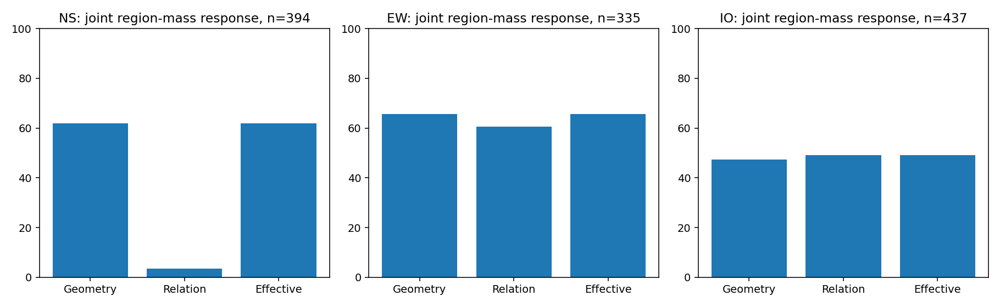
{
"north": "This is a residential building with a brown roof north of St. Teresa of the Child Jesus Catholic Church.",
"south": "This is a residential building with a brown roof south of St. Teresa of the Child Jesus Catholic Church."
}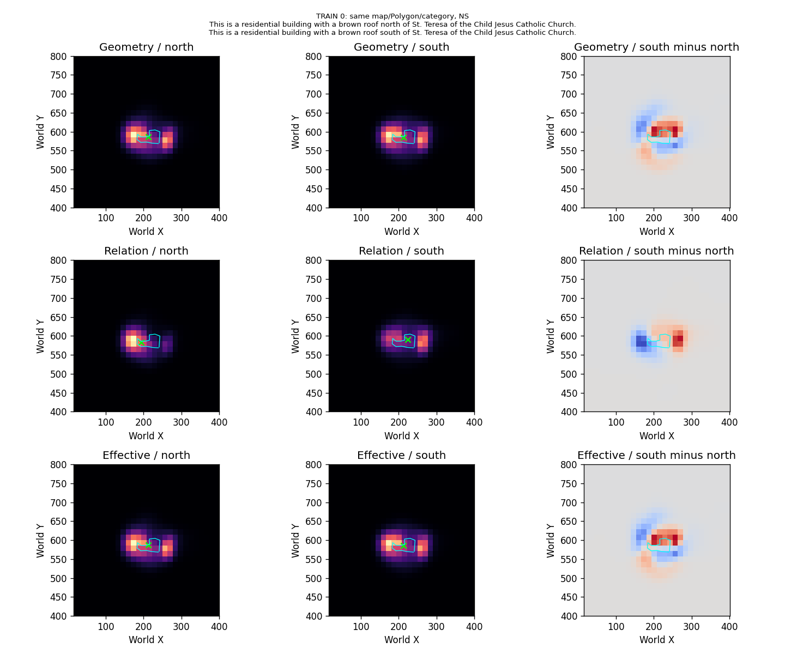
{
"north": "The building north of Bragg road with gray roof is second left from the building named Perry Barr Carpets",
"south": "The building south of Bragg road with gray roof is second left from the building named Perry Barr Carpets"
}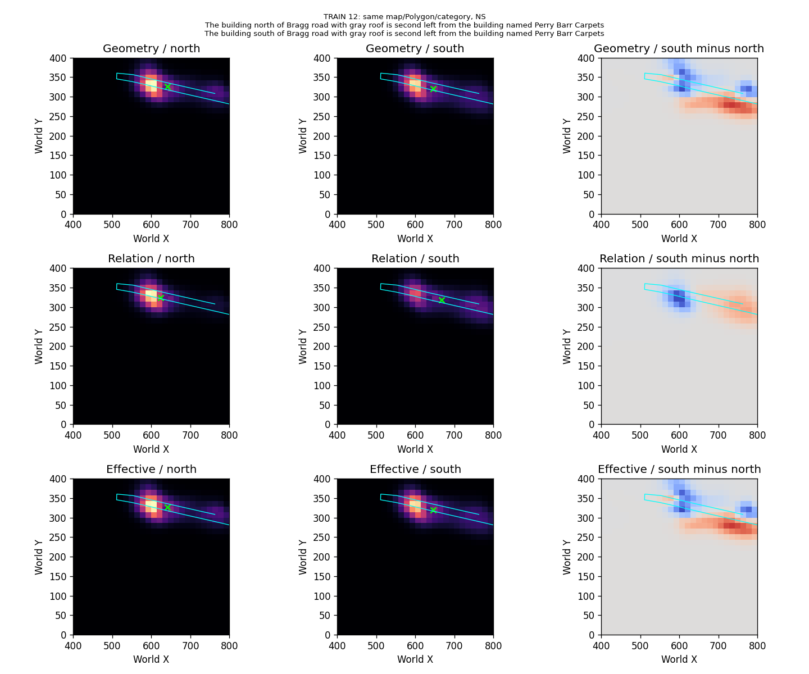
{
"north": "The building north of the Nike Factory Store that is beside the The Gym and the One Stop building.",
"south": "The building south of the Nike Factory Store that is beside the The Gym and the One Stop building."
}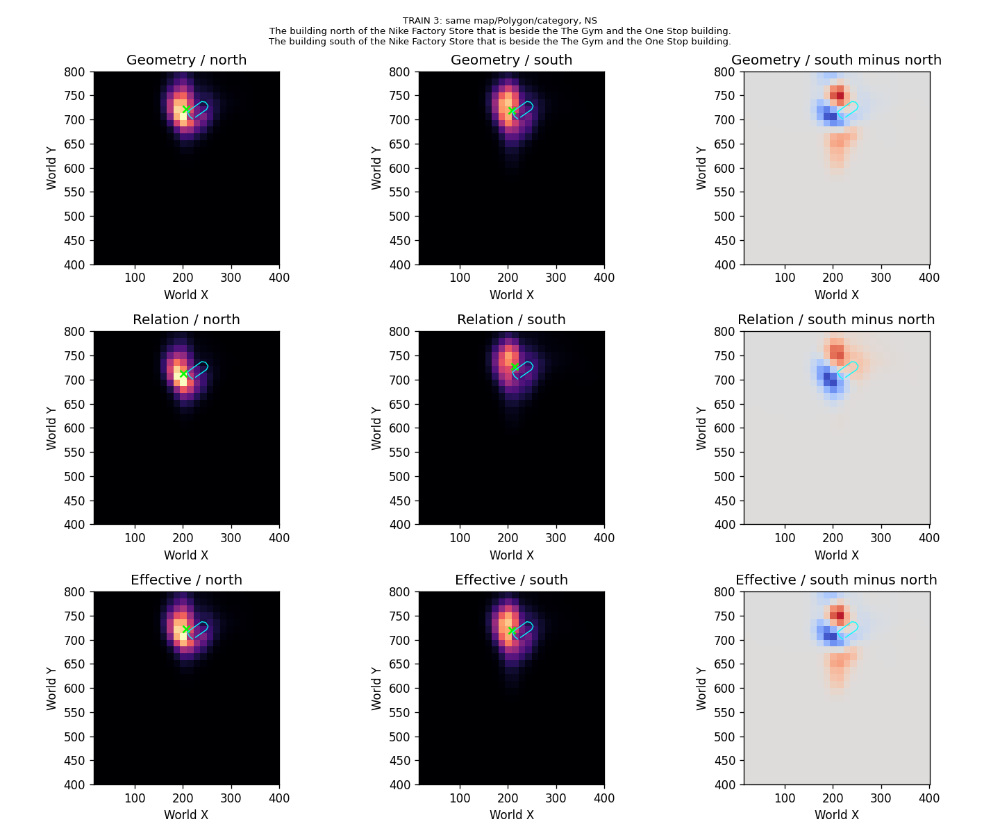
{
"east": "This is a residential building with a brown roof east of St. Teresa of the Child Jesus Catholic Church.",
"west": "This is a residential building with a brown roof west of St. Teresa of the Child Jesus Catholic Church."
}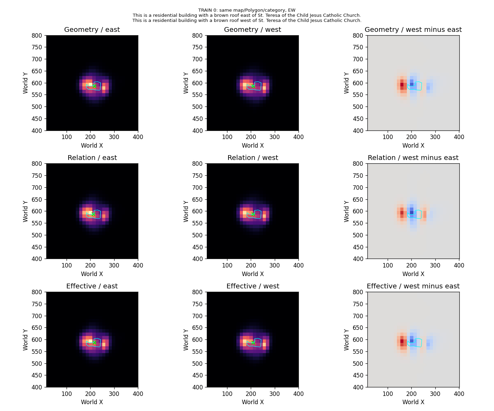
{
"east": "A rectangular white building east of St Teresa’s court building along wellington road. It is opposite Willmore road.",
"west": "A rectangular white building west of St Teresa’s court building along wellington road. It is opposite Willmore road."
}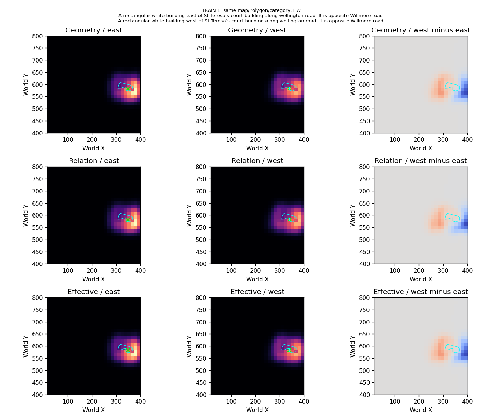
{
"east": "The building east of the Nike Factory Store that is beside the The Gym and the One Stop building.",
"west": "The building west of the Nike Factory Store that is beside the The Gym and the One Stop building."
}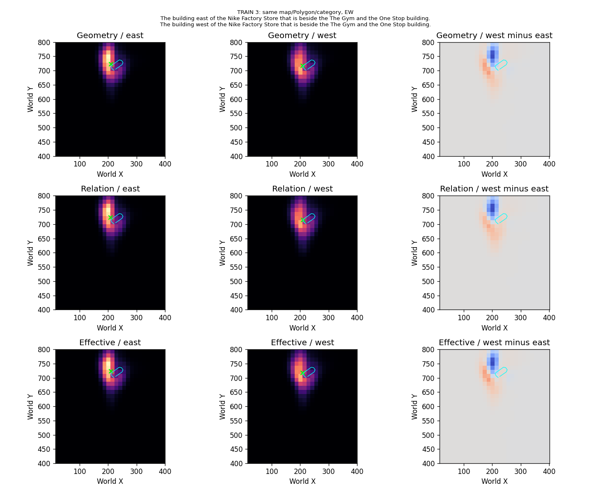
{
"inside": "A white building with a brown wall inside Bragg road. It has a black and a white car in front. The sixth house from the perry barr carpets.",
"outside": "A white building with a brown wall outside Bragg road. It has a black and a white car in front. The sixth house from the perry barr carpets."
}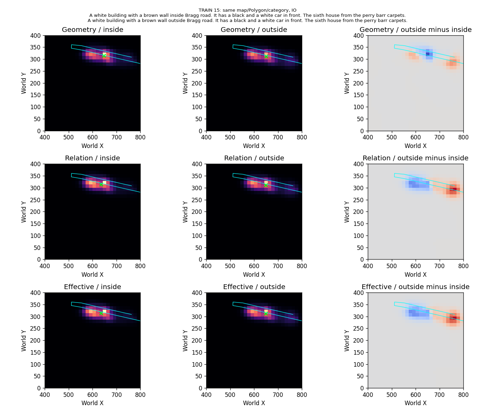
{
"inside": "This is a residential building with a brown roof inside St. Teresa of the Child Jesus Catholic Church.",
"outside": "This is a residential building with a brown roof outside St. Teresa of the Child Jesus Catholic Church."
}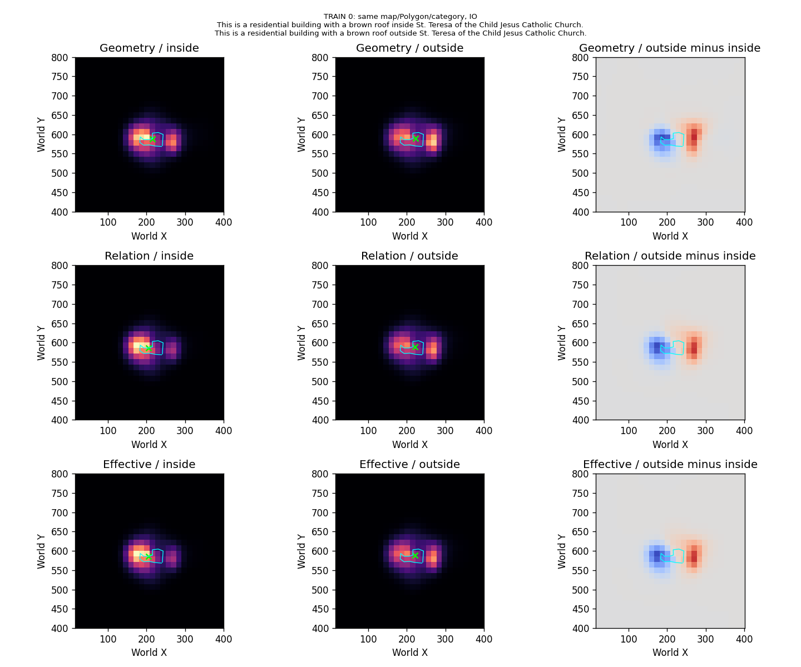
{
"inside": "A rectangular white building inside St Teresa’s court building along wellington road. It is opposite Willmore road.",
"outside": "A rectangular white building outside St Teresa’s court building along wellington road. It is opposite Willmore road."
}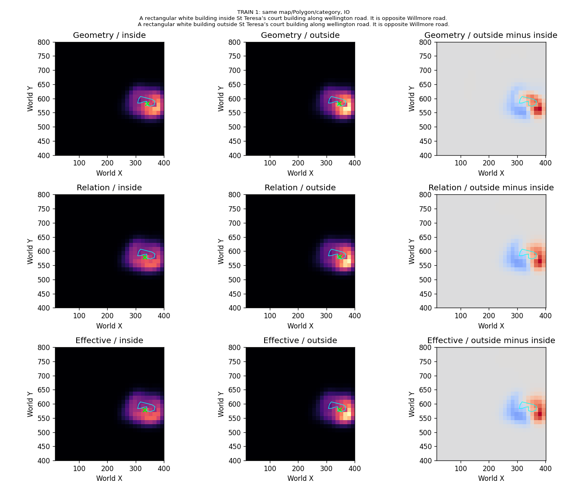